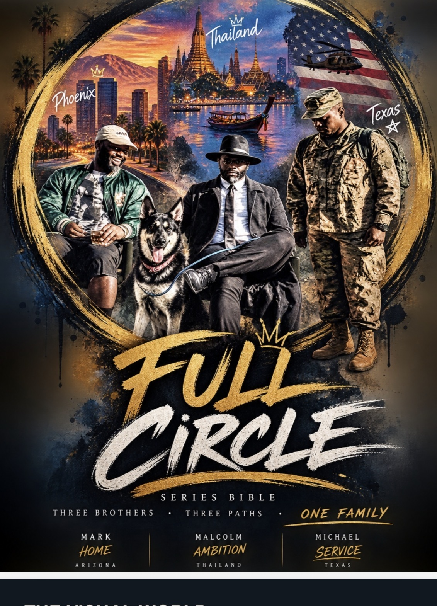

Full Circle
Class: PROD715R — TV Series Bible / PROD705R — Web Series Pilot
Assignment: Develop an original series bible and pilot/web-series material.
What I did: I created, wrote, produced, and performed in the project while developing character bios, episode structure, pilot material, visual concepts, and production documents.
What I learned: I learned how to build a repeatable television world and connect development material to production.
Why I chose it: It combines my roles as creator, writer, producer, and actor.